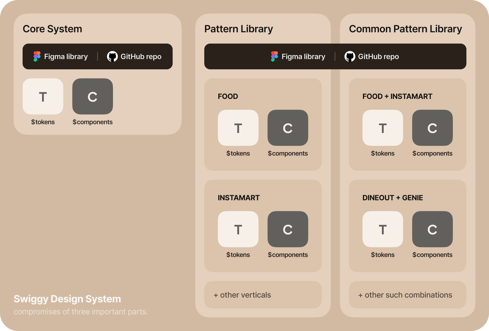

Its not a blog which talks about what a design system is and why it is important, there are better examples our there which can teach you the importance of a system. In this blog perhaps I'll be walking you through how we at Swiggy have and are building processes to bootstrap Design and Engineering. While the examples I talk about will revolve around addressing challenges specific to Swiggy, however the principles can be applied to organisations of any size or industry.
A little about scale and problem at hand
Swiggy is an organization known for running bold experiments and implementing experimental UIs. Over the past few months, we have shipped new features faster and with greater consistency than ever before. In order to keep up with the pace of business and expansion, we required a less-design, less-code framework that enables teams to bootstrap solutions more quickly.
In addition to our widely recognized products, such as Food and Instamart, Swiggy operates in many different verticals. These verticals encompass a range of applications, from customer-facing interfaces to dashboards designed for our supply partners. We needed a robust, all-weather framework that allows our teams to ship faster, fail faster, and iterate faster.
In addition to our widely recognized products, such as Food and Instamart, Swiggy operates in many different verticals. These verticals encompass a range of applications, from customer-facing interfaces to dashboards designed for our supply partners. We needed a robust, all-weather framework that allows our teams to ship faster, fail faster, and iterate faster.
Where does Design System sit in the grand scheme?
Our goal was to develop a system that seamlessly integrates with existing business-as-usual processes while carving out its unique space without causing major disruptions. It was imperative for us to place the Design System globally which governs all the patterns which are spread across different verticals while still embodying the unmistakable Swiggy DNA throughout.
Deconstructing our system
Attempting to talk about the intricacies of our design system would be a complex task. However, I will focus on three fundamental aspects that provide insights into its functioning:
1. System Architecture
The system is structured in a pretty conventional manner, divided into three distinct parts:

1.1 Core System - This encompasses all the components and elements that are business agnostic. It is intentionally kept separate from any specific business influence. The core system houses foundational building blocks such as tokens, control elements, input fields, and other fundamental design elements.
What it means for designers? - This is a Figma file which acts as a library to be included in working files. This has all the basic components, text styles, colour tokens and similar elements.
What it means for engineers? - This is a GitHub repo maintained separately for different technologies. This acts as a package which in included by all the projects which gives them boiler plate to start with
What it means for designers? - This is a Figma file which acts as a library to be included in working files. This has all the basic components, text styles, colour tokens and similar elements.
What it means for engineers? - This is a GitHub repo maintained separately for different technologies. This acts as a package which in included by all the projects which gives them boiler plate to start with
1.2 Pattern Library - This section is dedicated to assembling complex and intricate components. The elements within the pattern library are purposefully designed with specific teams or multiple teams in mind, while considering very specific business use cases. These components are crafted to address the unique needs and requirements of various teams within the organisation.
What it means for designers? -This is a separate Figma file which is also included as a library in working files. This has elements like cards, special buttons etc. While designing, the designers use mixture of components coming from both Core System and Pattern Library.
What it means for engineers? -This is also a GitHub repo which is included as a package in the working project.
What it means for designers? -This is a separate Figma file which is also included as a library in working files. This has elements like cards, special buttons etc. While designing, the designers use mixture of components coming from both Core System and Pattern Library.
What it means for engineers? -This is also a GitHub repo which is included as a package in the working project.
1.3 Common Pattern Library - This section serves as a playground where multiple teams can explore and adapt existing patterns to meet their specific requirements. Our goal is to maximize the reuse of patterns whenever possible. However, we keep this space somewhat separate from the pattern library to ensure that contributors and consumers (designers and engineers) are fully aware when utilizing a shared asset.
What it means for designers? -This is a separate page in the same Pattern Library Figma file.
What it means for engineers? -This is just a different folder inside the same Pattern Library GitHub repo.
What it means for designers? -This is a separate page in the same Pattern Library Figma file.
What it means for engineers? -This is just a different folder inside the same Pattern Library GitHub repo.
2. Theme support for Multiple Verticals
The foundation of our system revolves around the concept of aliases, which allows us to infuse a unique personality into the entire Swiggy fleet when integrated into different verticals. At the core of this system are tokens like BG Primary, Button Primary, and Border Primary. However, the meaning and appearance of these tokens can vary based on the specific vertical they are applied to.
To make it even flexible, our system includes support for vertical-dependent tokens within the pattern library. While this feature has some limitations, the need to create specific tokens arises infrequently. Nonetheless, we have provisions in place to address such requirements when they do arise.
To make it even flexible, our system includes support for vertical-dependent tokens within the pattern library. While this feature has some limitations, the need to create specific tokens arises infrequently. Nonetheless, we have provisions in place to address such requirements when they do arise.
How are things delegated and who runs the show?
Our Design System has evolved over time and now has reached a point where the entire thing works as a well oiled machine. Each gear in the process is placed meticulously and plays a vital role. To understand the delegation method, we'll need to understand the Champions Framework first.
Champions Framework
To gain a better understanding of this framework, it is essential to grasp its underlying architecture. The previously mentioned Core System and Pattern Library serve as the foundation for our Champions Framework, which is implemented both on the engineering and design fronts.
The framework operates on a straightforward principle: every vertical maintains its pattern library, and these UI patterns are collaboratively developed by champions from both the design and engineering domains. These champions act as gatekeepers and advocates for their respective charters.
When a specific UI pattern is requested or proposed, it is presented to the champion for evaluation. The champion assesses whether the pattern should be created from scratch or if a similar existing pattern can be modified to meet the requirement with minor adjustments. Once a decision is made, the champion takes on the responsibility of creating and documenting the chosen pattern from both the design and engineering perspectives.
If the champion determines that the pattern needs to be built from scratch, they collaborate with the design and engineering teams to develop a new pattern tailored to the specific requirements. This involves designing the visual elements and defining the functional aspects of it.
In addition to the champions, we have a dedicated core team consisting of designers and engineers who play a crucial role in optimising the system. This core team focuses on making architectural and holistic decisions to enhance the design system's overall performance and functionality.
The framework operates on a straightforward principle: every vertical maintains its pattern library, and these UI patterns are collaboratively developed by champions from both the design and engineering domains. These champions act as gatekeepers and advocates for their respective charters.
When a specific UI pattern is requested or proposed, it is presented to the champion for evaluation. The champion assesses whether the pattern should be created from scratch or if a similar existing pattern can be modified to meet the requirement with minor adjustments. Once a decision is made, the champion takes on the responsibility of creating and documenting the chosen pattern from both the design and engineering perspectives.
If the champion determines that the pattern needs to be built from scratch, they collaborate with the design and engineering teams to develop a new pattern tailored to the specific requirements. This involves designing the visual elements and defining the functional aspects of it.
In addition to the champions, we have a dedicated core team consisting of designers and engineers who play a crucial role in optimising the system. This core team focuses on making architectural and holistic decisions to enhance the design system's overall performance and functionality.
How do we make sure quality and Swiggy DNA is intact always?
To create a streamlined system while minimizing manual efforts, it is crucial for the solution to be self-governing and incorporate relevant gatekeeping mechanisms when necessary. At Swiggy, we follow a process called PP (Pixel-Perfection) signoff, which means that any feature ready for production must be approved by the designer to ensure it meets the expected standards (yes, design is sacrosanct to us).
DLS Audit Signoff
Similar to our PP Signoff, we have implemented this process which takes place before the designs are shared with engineers or presented in a dev-walkthrough. This process requires the feature designer to have a mandatory audit session with the design champion of their respective vertical. While this may seem like an additional step, we have developed several plugins to expedite this process.
This signoff procedure ensures that designs comply with our standards and acts as an initial gatekeeping layer. Additionally, the process ensures that any new patterns or components required for a feature are either already built or are assigned to the relevant team for development. This reduces the likelihood of bottlenecks in the later stages of the release cycle.
This signoff procedure ensures that designs comply with our standards and acts as an initial gatekeeping layer. Additionally, the process ensures that any new patterns or components required for a feature are either already built or are assigned to the relevant team for development. This reduces the likelihood of bottlenecks in the later stages of the release cycle.
What problems are we facing as of now?
Swiggy operates across multiple technology stacks, encompassing native technologies and web platforms. Currently, we are shipping various products using different stacks. However, this presents a challenge as we have to create entities separately for each technology. While we are gradually transitioning to more hybrid solutions, our legacy food delivery app still relies on native technologies.
The presence of diverse tech stacks poses an issue when it comes to creating the same component in different technologies, each with its own set of tradeoffs. We have adopted a strategy where we prioritize building components based on immediate needs, rather than developing all components for all technologies upfront.
Although we have achieved uniformity in terms of tokens across all platforms, the development of components follows an on-demand basis. This approach helps us allocate our resources more efficiently. However, it does occasionally result in situations where a particular tech stack lacks a necessary component or pattern for a specific feature.
The presence of diverse tech stacks poses an issue when it comes to creating the same component in different technologies, each with its own set of tradeoffs. We have adopted a strategy where we prioritize building components based on immediate needs, rather than developing all components for all technologies upfront.
Although we have achieved uniformity in terms of tokens across all platforms, the development of components follows an on-demand basis. This approach helps us allocate our resources more efficiently. However, it does occasionally result in situations where a particular tech stack lacks a necessary component or pattern for a specific feature.
What are we working on currently?
Attempting to talk about the intricacies of our design system would be a complex task. However, I will focus on three fundamental aspects that provide insights into its functioning:
Open sourcing our Design System
Over the past 1.5 years, we have encountered and successfully tackled various people, technical, and design challenges and solved them through iterative processes. This experience has led us to develop an approach that effectively addresses these issues and allows us to accomplish our goals. We understand that system design problems are commonly faced by many teams, especially during the early stages of developing their system.
In light of this, we have been actively working towards open sourcing our system design and providing comprehensive documentation on our workflows. Our aim is to assist designers and engineers in navigating through the majority of problems they encounter while creating a design system. By sharing our insights and approaches, we hope to contribute to the broader open source community and empower others to overcome similar challenges more efficiently.
In light of this, we have been actively working towards open sourcing our system design and providing comprehensive documentation on our workflows. Our aim is to assist designers and engineers in navigating through the majority of problems they encounter while creating a design system. By sharing our insights and approaches, we hope to contribute to the broader open source community and empower others to overcome similar challenges more efficiently.
Experimentation Framework